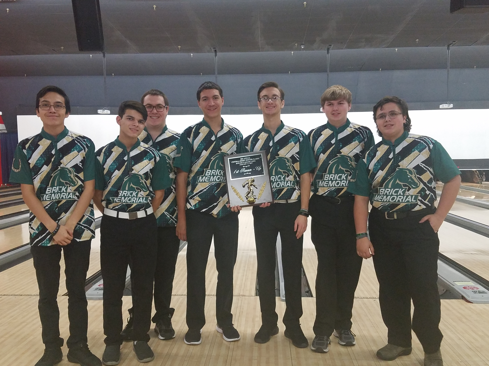
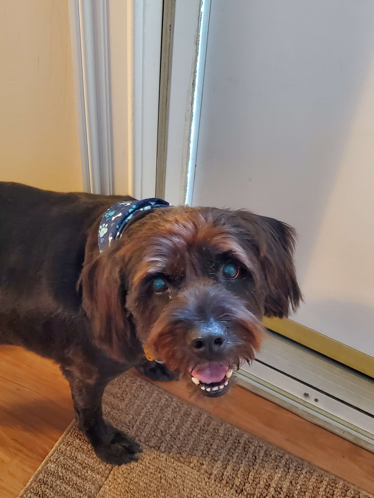
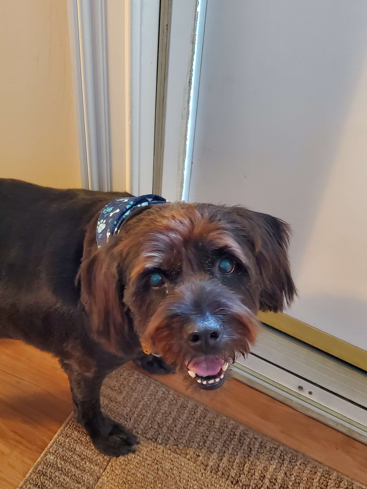
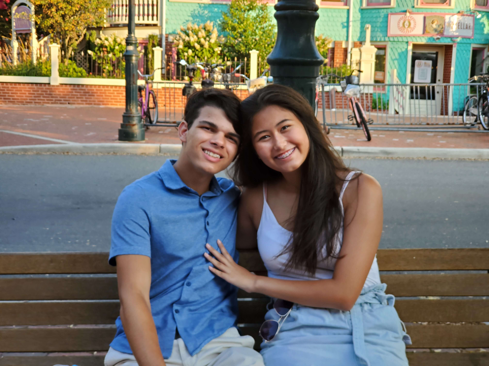
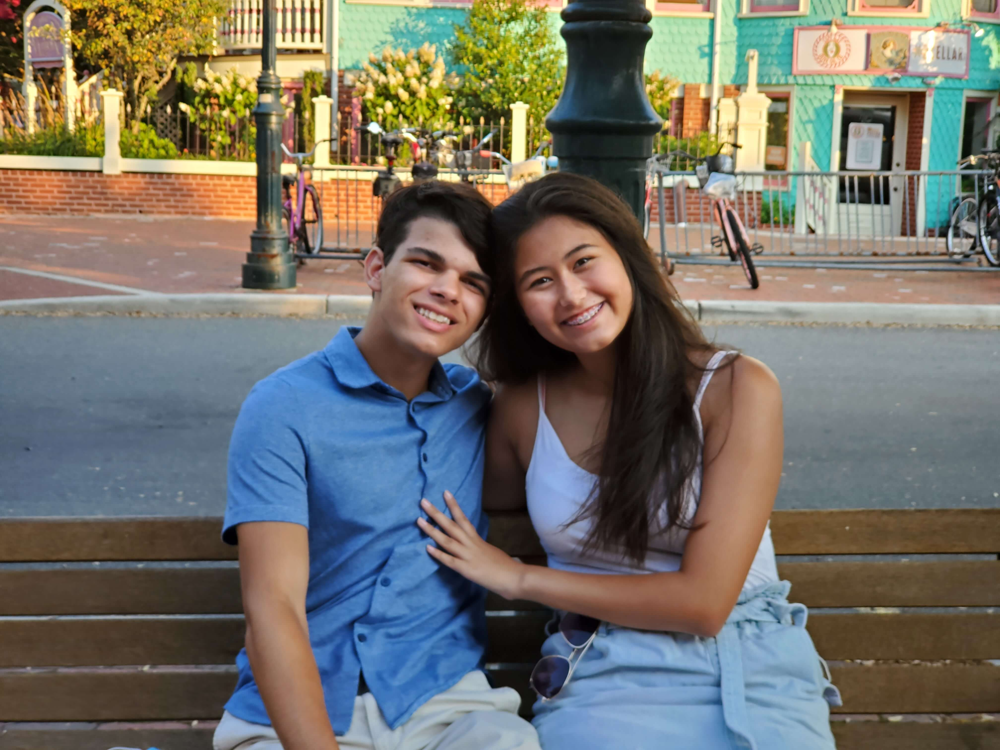
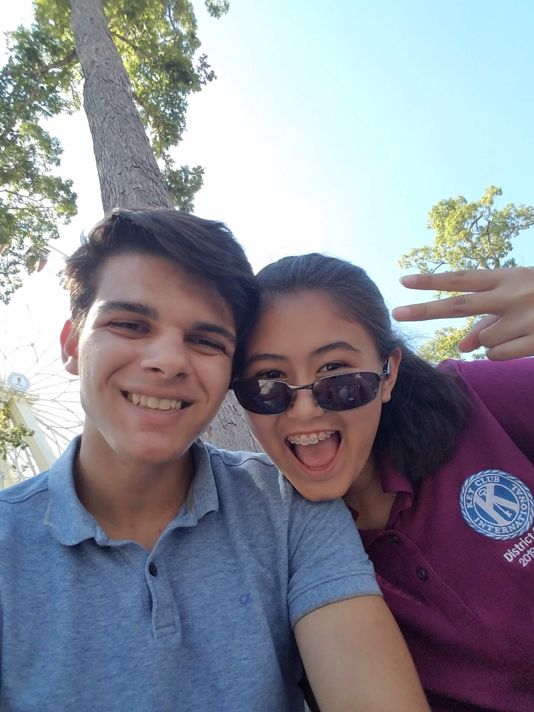
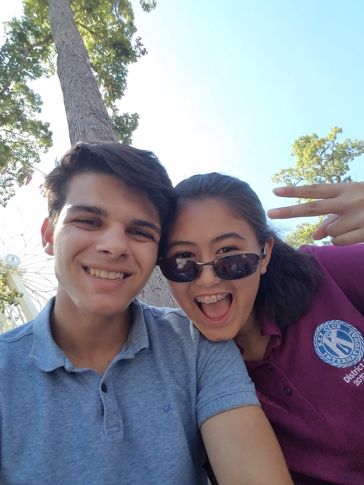
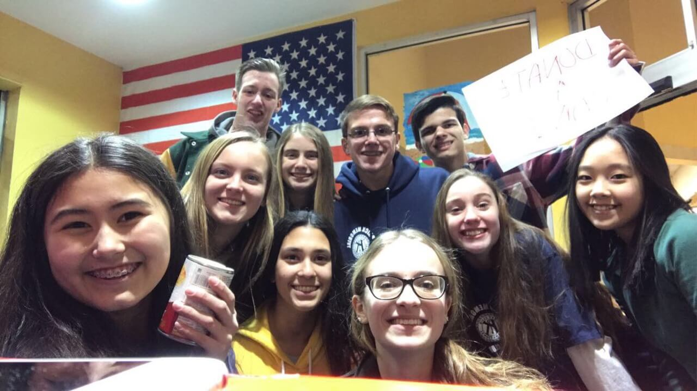
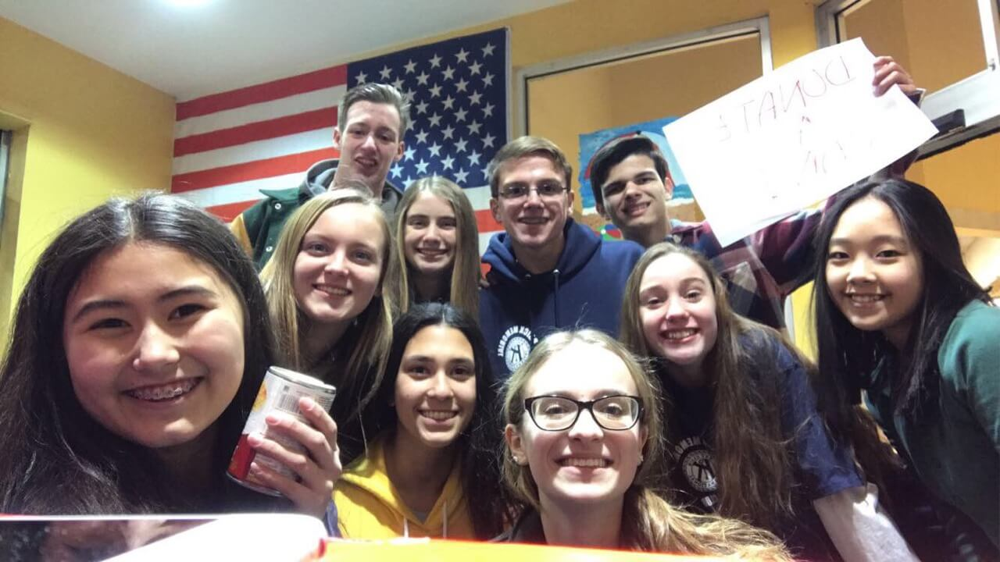

Everything Me
Hello
My name is Anthony Caruso
I am 18 years old, and currently a sophomore in college
I am currently attending the New Jersey Institute of Technology
I am currently pursuing a BS in Computer Science
I love coding and had a great time making this website!
In the future I want to work in software development or Cyber-security
I am an avid traveler
I typically spend my Summer traveling or trying to experience new places
So far I have visited about 10 countries
My hobbies include bowling, website design, gaming, and going to the gym
I used to work as the District Webmaster for NJ Key Club
I also used to work for my school district's Technology department as an intern
Extracurriculars
Key Club
I have been a member of Key Club every year I have been in High School. For my Freshman and Sophomore years I was a regular member of the club, however I attended almost every service event my club offered acculumating over 120 hours.
Junior year my experience was mostly the same, but halfway through I ran for the New Jersey District board as Webmaster (after applying the year before). My girlfriend convinced me to join and now we both work as members of that board, managing every club in the state.
As webmaster, I have maintained the website (applying to this position inspired me to learn website design and HTML) and worked on committees as the Member Recognition Chair! Many people will say, "Key Club changed my life for the better" and I fit right in there,
without Key Club I would not have done any community service nor would I have ever learned to code to the degree I do now, and therefore would not have pursued computer science as I do now!

BOWLING
It might not be as glorified as football or baseball, however one of, if not my proudest, achievements is becoming the Varsity Captain for my school. I started playing the sport around 4th grade and ever since have considered it my most enjoyable hobby.
When I started I did not even know it was possible to keep the ball out of the gutter but after spending countless hours practicing I improved to being one of the better bowlers in the state! I have participated in a lot of tournaments through and apart from my school's team; winning a couple of individual and team tournaments.
In 2018 my family and I took a road trip to Dallas after I qualified for the National Junior Gold Tournament which was a huge learning experience (and a fun excuse to visit Texas). All of these experiences helped me get my Varsity letter Freshman year, and this season the captain of the team as the most experienced member.
As captain, I organized summer practices and managed the 15 players on our team when our coach was not present.
STEM ACADEMY
While the STEM academy might be too broad to consider an extracurricular, I spend a lot of time outside of school doing projects and working with teachers and other students because of it. The STEM Academy, in general has taught me a lot about leadership and learning how to do new things; Without it I would have never become
interested in CAD modeling, or even programming as I learned it for a project we did. Outside of classes, STEM has provided me a lot of volunteer work and recently a paid job working with the tech department! I owe a lot to my program and am glad to be a part of it!
Muay Thai Kickboxing
Ever since fourth grade I have been enrolled in a local gym practicing Muay Thai. While originally I hated the classes (I wasn't in the best shape), I started to enjoy exercising and have learned how to defend myself in the meantime. Over the past 8 years, I rigorously worked
and in 2018 I became a black armband, which is hard to accomplish considering the amount of effort and determination you have to put it. Overall, taking these classes has put me in very good shape and has taught me persistance, mentally and physically.

TECHNOLOGICAL STUDENT ASSOCIATION
My Freshman year, TSA was a new club started for the STEM students to compete in various competitions. I competed in three competitions throughout my high school career:Video Game Design (twice), Webmaster, and Board Game Design. My team and I did not have much success until my senior year, where originally I
was making a second video game, named Tripartite (it was Olympic Themed and mostly completed), but we couldn't submit it because the convention got canceled, so instead I jumped onto webmaster, one of the few competitions being offered still, and won 3rd place in the state! Designing the Faraday Motors website was one of my
prouder accomplishments, especially because I created it (for the most part) within the 3 days before the deadline on top of schoolwork. While I was sad my video game could not be used, I was overjoyed that my website placed! Visit the projects' page to view some of my TSA submissions and learn more about what I had to do for each competition!
 



 



 


 
